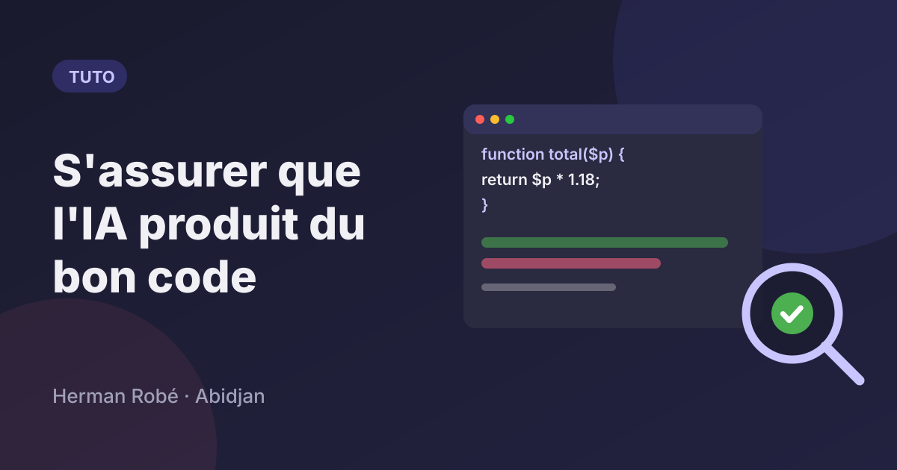
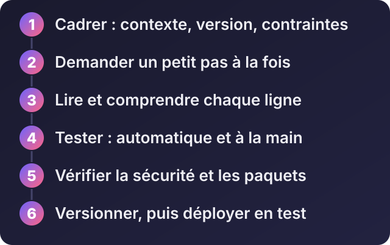
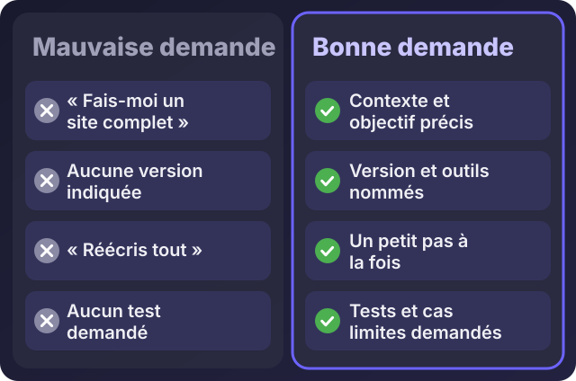
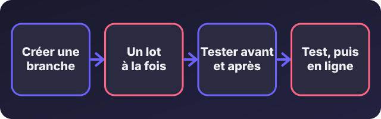

Comment s'assurer que l'IA produit du bon code (et mettre à jour un projet sans le casser)

Écouter cet article · environ 7 min
Vous demandez du code à une IA, elle répond en quelques secondes, et le code a l'air juste. Il se lit bien, il est commenté, il marche peut-être même du premier coup. C'est précisément le danger : un code qui a l'air juste n'est pas un code juste. Voici comment vous assurer que ce que produit l'IA est fiable, et comment l'utiliser pour mettre à jour un projet existant sans le casser.
Je l'utilise tous les jours dans mon travail, et c'est ma règle : l'IA propose, je vérifie, je teste, puis je livre. Voici la méthode.
Ce qui peut mal tourner
- Un code qui marche en apparence mais qui échoue sur un cas particulier : champ vide, nombre négatif, deux utilisateurs en même temps.
- Des fonctions ou des options inventées. L'IA peut proposer une fonction qui n'existe pas, avec assurance.
- Des méthodes d'une ancienne version. Elle a appris sur des textes plus anciens que votre version du framework.
- Des failles de sécurité : une requête mal protégée, un contrôle d'accès oublié, un mot de passe écrit dans le code.
- Des paquets qui n'existent pas. Elle peut recommander une bibliothèque au nom plausible mais inexistant, et des personnes mal intentionnées peuvent publier un paquet piégé sous ce nom.
- Une réécriture trop large. Vous demandez une petite correction, elle modifie vingt fichiers.
La méthode en six étapes

1. Cadrer : donner le contexte, la version et les limites
La qualité de la réponse dépend de la qualité de la demande.

Voici un modèle de demande que je réutilise :
Contexte : application Laravel 12, PHP 8.3, base MySQL.
Objectif : ajouter un champ "téléphone" à la table des clients et l'afficher dans la fiche client.
Contraintes : ne modifie que les fichiers nécessaires, garde le style existant, n'ajoute aucune bibliothèque.
Ce qu'il ne faut pas toucher : le système d'authentification.
Format : montre uniquement les changements, fichier par fichier.
Ajoute aussi un test et liste les cas limites à vérifier.Indiquez toujours la version de votre framework et de votre langage. Et vérifiez dans la documentation officielle qu'une méthode proposée existe bien dans votre version.
2. Demander un petit pas à la fois
Évitez « fais-moi tout le module de facturation ». Découpez : d'abord la table, puis le formulaire, puis le calcul, puis l'affichage. Chaque petit pas se relit et se teste facilement. Un gros bloc généré d'un coup est presque impossible à contrôler.
3. Lire et comprendre chaque ligne
Traitez ce code comme celui d'un stagiaire doué mais pressé. Posez-lui des questions :
- « Explique ce que fait ce code, ligne par ligne. »
- « Quels sont les cas limites et que se passe-t-il pour chacun ? »
- « Qu'est-ce qui pourrait échouer en production ? »
- « Y a-t-il une façon plus simple de faire ? »
Si vous ne comprenez pas une partie, ne la mettez pas dans votre projet. Un code qu'on ne comprend pas est un code qu'on ne saura pas corriger.
4. Tester : automatiquement et à la main
- Les tests automatiques vérifient que le code fait ce qu'il doit, et continuent de le vérifier à chaque modification. Pour PHP et Laravel, PHPUnit ou Pest ; pour JavaScript, Vitest. L'IA peut vous aider à les écrire, mais relisez-les : un test trop gentil ne prouve rien.
- Les tests à la main, avec des cas réels : un champ vide, un texte très long, un caractère accentué, un nombre négatif, un utilisateur sans droits.
- Utilisez des données de test, pas celles de vos vrais clients.
5. Vérifier la sécurité et les paquets
- Aucun secret dans le code ni dans la conversation avec l'IA : pas de mot de passe, pas de clé d'API réelle. Utilisez des exemples bidons.
- Les entrées des utilisateurs ne sont jamais fiables : elles doivent être validées, et les requêtes à la base de données doivent passer par l'ORM ou des requêtes préparées, pas par du texte collé.
- Les droits d'accès : vérifiez que chaque action contrôle bien qui a le droit de la faire.
- Chaque paquet recommandé : vérifiez que le nom est exact, qu'il vient du dépôt officiel, qu'il est maintenu et utilisé. Le moindre doute, ne l'installez pas.
- Auditez vos dépendances :
composer auditpour PHP,npm auditpour JavaScript, signalent les failles connues. - Pour une vue d'ensemble des risques courants, la liste OWASP Top 10 est une bonne référence.
6. Versionner, puis déployer en test
Git est votre filet de sécurité :
git checkout -b ajout-telephone # une branche pour ce travail
git add -A && git commit -m "Avant modification par l'IA"
# ... l'IA propose des changements, vous les appliquez ...
git diff # relisez TOUT ce qui a changéRelisez le git diff ligne par ligne : c'est la façon la plus sûre de voir tout ce que l'IA a réellement modifié, y compris ce que vous n'aviez pas demandé. Faites de petits commits, pour pouvoir revenir en arrière facilement. Déployez d'abord sur un environnement de test, et seulement ensuite en production.
Mettre à jour un projet existant avec l'IA
C'est là que le risque est le plus grand : on ne part pas d'une page blanche, on modifie quelque chose qui marche déjà.

- Sauvegardez le code et la base de données, et travaillez sur une branche.
- Donnez à l'IA les fichiers concernés, pas tout le projet, et précisez vos conventions (noms, structure, style).
- Demandez le changement minimal : « modifie uniquement ce qui est nécessaire, sans reformater le reste ».
- Faites tourner les tests avant et après. S'il n'y en a pas, écrivez-en au moins pour la partie touchée.
- Relisez le
git diff, puis testez à la main le parcours complet. - Déployez en test, puis en production, en sauvegardant la base avant toute migration.
Mettre à jour les dépendances ou la version du framework
Ne demandez pas à l'IA de « tout mettre à jour d'un coup ».
- Une montée de version à la fois, jamais deux sauts en même temps.
- Lisez le guide de mise à niveau officiel : par exemple, celui de Laravel liste les changements à faire. L'IA peut vous aider à les appliquer, mais la source de vérité, c'est la documentation officielle.
- Mettez à jour par petits lots, et lancez les tests entre chaque lot.
- Gardez le formatage cohérent avec un outil automatique comme Laravel Pint ou ESLint, plutôt que de laisser l'IA reformater tout le code.
La liste à passer avant de livrer
- Je comprends chaque partie du code.
- Les tests passent, et j'ai testé à la main les cas d'erreur.
- Aucun secret n'est dans le code.
- Les paquets sont vérifiés, et
auditne signale rien de grave. - J'ai relu le
git diff. - J'ai une sauvegarde et je peux revenir en arrière.
- J'ai d'abord essayé en test.
Si vous voulez de l'aide
Vous avez un projet démarré avec une IA et vous n'êtes pas sûr de sa solidité ? Je peux relire et sécuriser le code, ajouter des tests, vérifier les dépendances, et mettre en place une méthode de travail sûre pour la suite. Écrivez-moi sur WhatsApp avec le type de projet et ce qui vous inquiète.